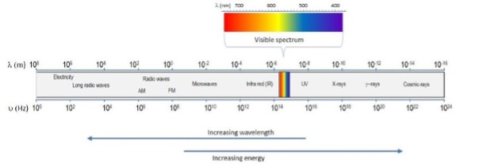
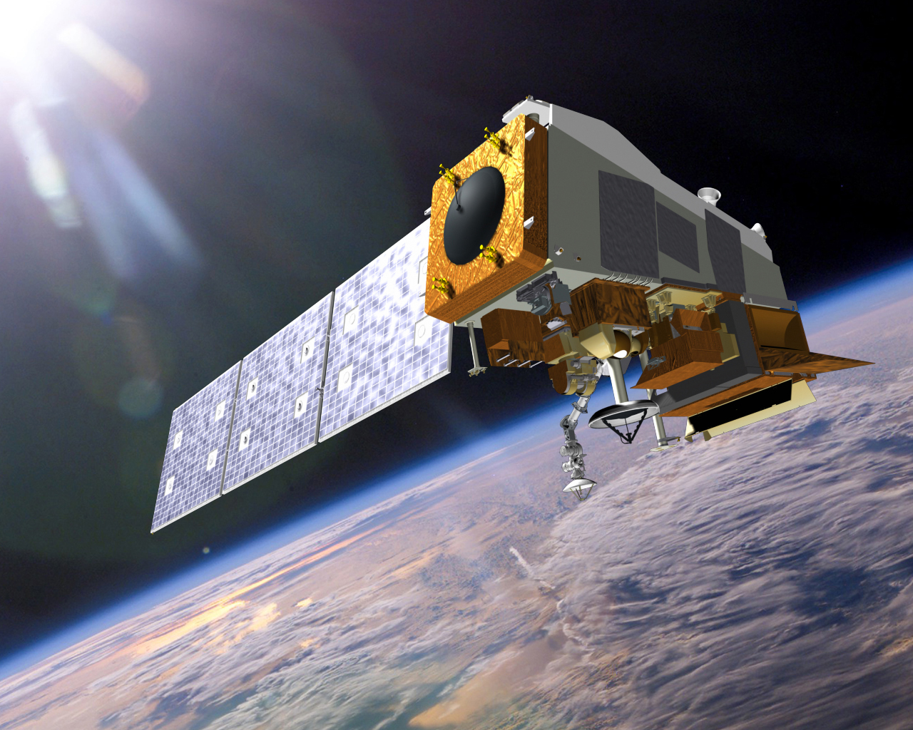

1 Introduction to Remote Sensing
1.1 Summary
Remote sensing refers to methods of data collection whereby phenomena are observed and captured from afar. In the context of geospatial analysis, remote sensing refers to the capture and analysis of data pertaining to Earth’s surface from airborne and particularly spaceborne sensors.
1.1.1 Sensor technologies and data collection
The medium of remote sensing is electromagnetic radiation. Remote sensing platforms monitor and record electromagnetic radiation reflected from the earth’s surface at specific wavelengths, including but not limited to the wavelengths of EMR which humans perceive as visible light.

1.1.2 Active versus passive sensors
Satellite sensors can be classified either as passive sensors or active sensors. A passive sensor only detects radiation reflected from the earth to the sensor and emits no energy of its own. For instance, an optical camera only captures light as it enters the aperture, emitting no energy of its own. An active sensor also captures energy from the surface, but the sensor is also the original source of that energy. For instance, a radar satellite emit radar pulses to the surface to capture their reflection (Earth Science Data Systems 2020).
1.1.3 Types of Data Resolution
Remote sensing platforms attempt to balance several key types of resolution to maximise the breadth and utility of the data collected.
Spatial Resolution: Remote sensing data comes in the form of raster data, whereby the Earth’s surface is broken up into grid cells. Spatial resolution refers to the size of each of these grid cells. Sensors with higher spatial resolutions can measure EMR at a more granular level, i.e. in smaller grid cells.
Temporal Resolution: Satellites travel over the Earth’s surface to collect data in regular and consistent orbits and revisit places at well-defined intervals. Satellites that capture more of Earth’s surface at a time (usually as a trade off with spatial resolution) rephotograph given points more frequently leading to a higher number of discrete observations over time.
Spectral Resolution: EO Satellites monitor specific bands of the EM spectrum, that is, specific wavelengths of radiation. Satellites that monitor more bands at once are said to have higher spectral resolution.
Radiometric Resolution: Sensors with high radiometric resolution can capture smaller differences in the intensity of radiation being reflected from Earth’s surface. To that end, they will report intensity results with higher precision.
1.1.4 Atmospheric Interference
A challenge of EO is ensuring that radiation reflected to the sensor accurately captures conditions at the surface. Radiation can be distorted in several ways such that data provides an inaccurate account of surface phenomena or is incapable capturing data at all. The most obvious interference is cloud cover, which blocks satellites from recording visual light from the surface.
Other atmospheric phenomena distort readings, even when radiation can still travel from the surface to the satellite. For instance, the angle at which energy is reflected off the earth and the smoothness of the planet’s surface both cause light to reflect upward at different intensities in different directions. Additionally, light from the sun that never reaches Earth’s surface may instead by reflected off the atmosphere directly and be recorded by the sensor.
1.1.5 End user data analysis
This week also briefly covered how end users of EO data can download and begin to manipulate remotely sensed data. Several platforms exist to process this sort of data, which is often large and computationally intensive to store and process. We learned how to download data from popular sensing platforms, namely ESA’s Sentinel and USGS’s Landsat. We also learned how to visualise and manipulate data bands in QGIS, and were introduced to SNAP, an application specifically designed to process Sentinel Data.
1.2 Applications in Research
The field of remote sensing is vast, but one area in which I am particularly interested is the application of light emissions data from the DMSP and VIIRS satellite platforms to map the extent of urban development in polycentric urban entities known as megaregions. Originally pioneered by Richard Florida in his 2008 paper The Rise of the Mega-region (Florida, Gulden, and Mellander 2008), this method uses light emissions as a proxy for urban development to create a more data-driven method of identifying urban extents than municipal boundaries and is not as sensitive to how land cover is classified, as is the case with more traditional methods of identifying urban development from space (Woodall et al. 2023).
My particular interest in this research comes from a project I worked on during my undergraduate years where my research group identified satellite-driven approaches to defining megaregions as one of the fundamental methods in past literature and argued for an approach to defining urban boundaries by integrating VIIRS data with landcover data from Landsat and other remotely sensed built environment indicators, in a manner similar to Georg et al. in their analysis of the Boston-Washington corridor (Georg, Blaschke, and Taubenböck 2018).

1.3 Reflection
My favourite part of this week’s class was learning about the motivations for and the trade-offs between different remote sensing platforms. Much of my experience with remote sensing has been in the context of a specific singular remotely sensed dataset, so I have not had the opportunity to compare different platforms (e.g. Landsat vs Sentinel) in the past or consider their respective resolutions.
Additionally, my prior exposure to remote sensing has been contained almost entirely to Google Earth Engine which has been implied in this first week of class to have unique advantages when it comes to data management and processing of EO data. I feel as if my experience in the first practical has validated that outlook to some degree, as I found downloading Landsat and Sentinel data and storing it on my local machine to be extremely cumbersome and computationally slow.
Proprietary platforms like SNAP, the ESA applications platform for Sentinel, introduce another layer of difficulty because of incompatibilities with recent MacOS updates. Although I’m excited to develop a stronger understanding of these tools for remote sensing, particularly R, I am looking forward to the return to Earth Engine.